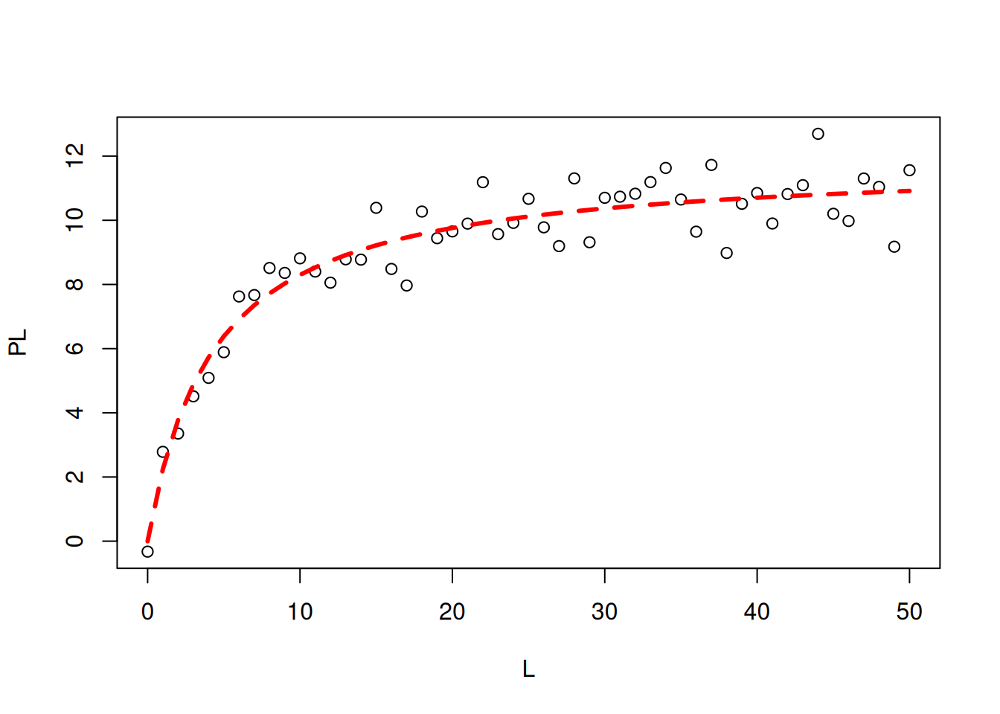
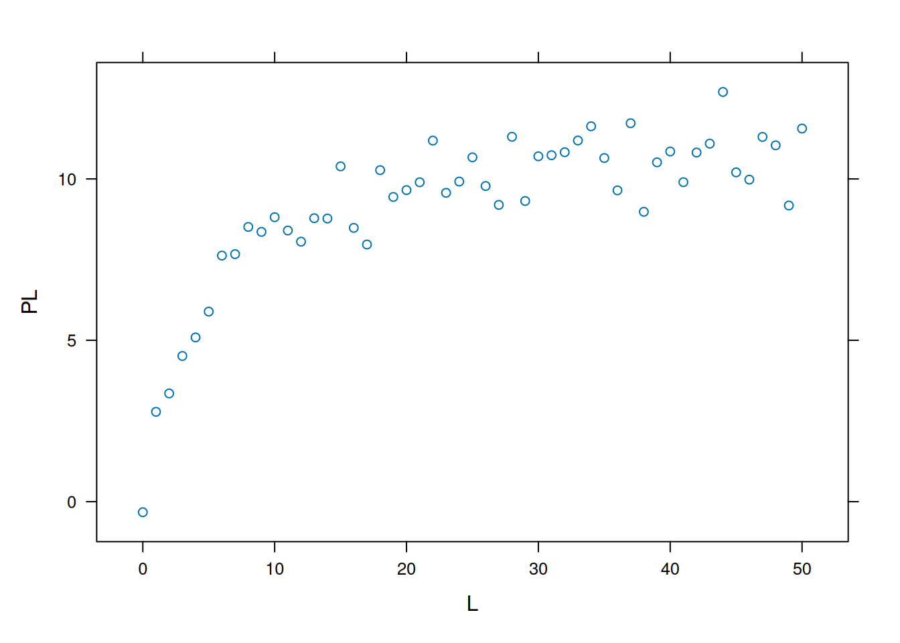

When mentioning interaction between biomolecules, one usually refers to adsorptive processes involving a biopolymer (protein, nucleic acid, glycan) and a low molecular weight ligand, although the formalism also applies with some restriction to interactions between biopolymers, and even whole cells.
The most common formalism for biomolecular interaction is that which involves the formation of an adsorptive complex between a protein and a ligand (ligand binding), exemplified for ions (Ca\(^{2+}\), Mg\(^{2+}\), etc.), drugs and candidates, natural products, and antigens, among others.
Simple questions about ligand-protein interaction can elucidate several characteristics of the formation of such complexes, such as:
How much protein/ligand is present?
How much of the complex is formed?
How fast does the complex associate/dissociate?
What are the mechanisms involved?
In general, the ligand-protein interaction can be represented as follows:
Where P represents the free protein content, L the free ligand, and PL the formed complex. The reaction rates are defined for the formation (k\(_{on}\); M\(^{-1}\)s\(^{-1}\)) and dissociation (k\(_{off}\); s\(^{-1}\)) of the complex.
Thus, the equation for the interaction isotherm of the ligand with the protein is deduced as follows:
\[
Kd=\frac{[P]*[L]}{[P]+[L]}
\tag{2}\]
Where Kd represents the equilibrium dissociation constant for the formed PL complex, as conditioned on the formation/dissociation equilibrium of the complex (v\(_{assoc}\) = v\(_{dissoc}\)), and also defined as:
\[
Kd=\frac{k_{off}}{k_{on}}
\tag{3}\]
From Equation 2 one can easily deduce the final expression for the interaction of a ligand to a set of sites of the same affinity on the protein:
\[
\nu=\frac{n * [L]}{Kd + [L]}
\tag{4}\]
Interaction Models and Linear Representations
Note that Equation 4 practically repeats the formalism already seen with the formation of the activated enzyme-substrate complex from the Enzymes chapter, as well as its resulting representation as a quadratic hyperbola. In fact, it essentially replaces the kinetic parameter v of the reaction by the thermodynamic parameter \(\nu\) (“nu”, from the Greek) for the binding isotherm. The other quantities involved remain analogous (P in place of E; L in place of S;Kd in place of Km; and n in place of Vmax).
Maintaining this similarity with the formalism of the Michaelis-Menten equation, the linearizations for the Equation 4) follow in the same way, as well as non-linear adjustments to it, in the search for an analytical solution for the thermodynamic parameters Kd and n. Here is an example of a code snippet for the most common linearizations in the treatment of ligand-protein interaction data:
# Linearizations in bimolecular interactionsL <-c(0.1, 0.2, 0.5, 1, 5, 10, 20) *1e-6Kd <-1e-6n <-1v <- n * L / (Kd + L)par(mfrow =c(2, 3)) # establishes plot area for 6 graphsplot(L, v, type ="o", main ="Direct")plot(log(L), v, type ="o", main ="Langmuir")plot(1/ L, 1/ v, type ="o", main ="Klotz")plot(v, v / L, type ="o", main ="Scatchard")plot(L, L / v, type ="o", main ="Woolf")plot(log10(L), log10(v / (n - v)), type ="o", main ="Hill")
Main linearizations of the ligand-protein binding isotherm.
par(mfrow =c(1, 1)) # return to normal graphics window
Deviations from linearity, on the other hand, are often used as diagnostics for models other than the binding site homogeneity model as above (site heterogeneity, site creation, cooperativity). The equations below describe these models, and consider K, ligand-protein equilibrium association constant, as the inverse of Kd, in order to make the expressions more readable:
\[
K = \frac{1}{Kd}
\tag{5}\]
The binding site heterogeneity model assumes that there is one more site in the protein with distinct affinities for the ligand (Dahlquist 1978). Formally, this model can be exemplified for 2 sets of binding sites, as follows:
The code snippet below exemplifies the model in R, as well as its main diagnostic linearizations.
# Binding site heterogeneityL <-c(0.1, 0.2, 0.5, 1, 5, 10, 20) *1e-6Kd1 <-2e-6n1 <-1Kd2 <-2e-8n2 <-1v <- (n1 * L / (Kd1 + L)) + (n2 * L / (Kd2 + L))par(mfrow =c(2, 3)) # set plot area for 6 graphsplot(L, v, type ="o", main ="Direct")plot(log(L), v, type ="o", main ="Langmuir")plot(1/ L, 1/ v, type ="o", main ="Klotz")plot(v, v / L, type ="o", main ="Scatchard")plot(L, L / v, type ="o", main ="Woolf")plot(log10(L), log10(v / (n1 + n2 - v)), type ="o", main ="Hill")
Model and linearizations for heterogeneity of 2 sets of binding sites
# n1+n2=ntot no Hillpar(mfrow =c(1, 1)) # return to normal graph window
The one-site creator model (Parsons and Vallner 1978) establishes a positive cooperativity resulting from the production of new sites for the ligand in the protein. The following is the exemplified model and its resulting linearizations.
# New site creation under ligand interactionL <-c(0.1, 0.2, 0.5, 1, 5, 10, 20) *1e-6Kd1 <-2e-6n1 <-1Kd2 <-2e-5n2 <-1nH <-0.5v <- (n1 * L *1/ Kd1) / (1+1/ Kd1 * L) +((n2 *1/ Kd1 *1/ Kd2 * L^2) / (1+1/ Kd1 * L) * (1+1/ Kd2 * L))par(mfrow =c(2, 3)) # set plot area for 6 graphsplot(L, v, type ="o", main ="Direct")plot(log(L), v, type ="o", main ="Langmuir")plot(1/ L, 1/ v, type ="o", main ="Klotz")plot(v, v / L, type ="o", main ="Scatchard")plot(L, L / v, type ="o", main ="Woolf")plot(log10(L), log10(v / (n - v)), type ="o", main ="Hill")
Model and linearizations for new site creation: 1-site creator.
# n1+n2=ntot no Hillpar(mfrow =c(1, 1)) # return to normal graph window
The cooperativity models (negative and positive) follow a similar formalism described for oxygen binding to hemoglobin in the Proteins chapters. In negative cooperativity a second ligand molecule interacts with the protein with lower affinity:
# Negative cooperativity in ligand-bindingL <-c(0.1, 0.2, 0.5, 1, 5, 10, 20) *1e-6Kd <-2e-6n <-1nH <-0.5v <- (n * L^nH / (Kd + L^nH))par(mfrow =c(2, 3)) # set plot area for 6 graphsplot(L, v, type ="o", main ="Direct")plot(log(L), v, type ="o", main ="Langmuir")plot(1/ L, 1/ v, type ="o", main ="Klotz")plot(v, v / L, type ="o", main ="Scatchard")plot(L, L / v, type ="o", main ="Woolf")plot(log10(L), log10(v / (n - v)), type ="o", main ="Hill")
Model and linearizations for negative cooperativity of binding sites.
# n1+n2=ntot no Hillpar(mfrow =c(1, 1)) # return to normal graphics window
In positive cooperativity, a second ligand molecule interacts with the protein with greater affinity than the first molecule (Parsons and Vallner 1978):
# Positive cooperativity in ligand bindingL <-c(0.1, 0.2, 0.5, 1, 5, 10, 20) *1e-6Kd <-2e-6n <-1nH <-1.5v <- (n * L^nH / (Kd + L^nH))par(mfrow =c(2, 3)) # establish plot area for 6 graphsplot(L, v, type ="o", main ="Direct")plot(log(L), v, type ="o", main ="Langmuir")plot(1/ L, 1/ v, type ="o", main ="Klotz")plot(v, v / L, type ="o", main ="Scatchard")plot(L, L / v, type ="o", main ="Woolf")plot(log10(L), log10(v / (n - v)), type ="o", main ="Hill")
Model and linearizations for positive cooperativity of binding sites.
# n1+n2=ntot no Hillpar(mfrow =c(1, 1)) # return to normal graphing window
Note that the slope of the Hill plot is less than unity for negative cooperativity and greater than unity for positive cooperativity, and represents the same nH parameter seen in the Proteins chapter.
Although subject to criticism for its statistical inconsistency (dependent variable on both axes), the Scatchard representation has been favored for decades as a diagnostic for ligand-protein interaction models. Among its advantages is the ability to easily distinguish the positive cooperativity model (uphill) from the heterogeneity of binding sites (steep slope) or negative cooperativity (gentle slope).
Nonlinear Fitting in Ligand-Protein Interaction
Direct fits of the nonlinear equation of interaction models can also be performed as was done for the Michaelis-Menten equation in the Enzymes chapter. For example, one can simulate obtaining experimental binding data by the following excerpt, using the ‘runif’ (random uniform) command to generate a random sequence (as was done in the Enzymes chapter). To illustrate, see Figure 1.
Note that the ‘rnorm’ command adds a normal distribution error to the data. Another way to simulate these is given below by introducing the ‘runif’ random number generation command.
# Simulation of bimolecular interaction data (1 site)# Simulation of dataset.seed(20160227) # sets seed for random number generationL <-seq(0, 50, 1)PL <- ((runif(1, 10, 20) * L) / (runif(1, 0, 10) + L)) +rnorm(51, 0, 1)# 1. runif(n,min,max); when without attributes, min=0 and max=1 are considered# 2. rnorm(no. points,mean,deviation) - random error of normal distributionplot(L, PL, xlab ="L", ylab ="PL")
Simulated data for bimolecular interaction isotherm.
Now we need to use the ‘nls’ command for nonlinear fitting, superimposition of the theoretical curve, and statistical table of results:
# Nonlinear fitting in ligand bindingm <-nls(PL ~ n * L / (Kd + L), start =list(n =1, Kd =1))# Correlation coefficientcor(PL, predict(m)) # Pearson correlation coefficient
[1] 0.9496598
# Data plot and simulationplot(L, PL)lines(L, predict(m), lty =2, col ="red", lwd =3)

summary(m)
Formula: PL ~ n * L/(Kd + L)
Parameters:
Estimate Std. Error t value Pr(>|t|)
n 11.8478 0.2620 45.216 < 2e-16 ***
Kd 4.2778 0.5113 8.366 5.3e-11 ***
---
Signif. codes: 0 '***' 0.001 '**' 0.01 '*' 0.05 '.' 0.1 ' ' 1
Residual standard error: 0.7826 on 49 degrees of freedom
Number of iterations to convergence: 6
Achieved convergence tolerance: 1.554e-06
Graphics Systems in R
The last simulation curve obtained was from the standard library for manipulating graphics in the ‘R’ installation, Graphics. This is a broad set of functions also used by several other packages in the environment. However, there are several other libraries in ‘R’ for creating graphs, among which it is worth highlighting Lattice, also included in the standard installation, and ggplot2. Both systems generate results with better aesthetics and graphic flexibility than the standard Graphics library, and have different uses and semantics.
The Lattice system (Sarkar 2008) is based on the Trellis system for graphical representation of multivariate data. Its strength lies in the representation of data in panels containing subgroups and, although it has a less intuitive and sometimes more elaborate syntax than the Graphics package, it produces a superior graph with just a few keyboard clicks. In general, Lattice produces the graph within the algorithm itself, in a different way to the Graphics systems (successive lines of modification to the graph can be accumulated) or ggplot2.
On the other hand, the ggplot2 library is based on the graphics grammar (Wickham 2011), and produces the graph using a single command line that combines overlapping layers, similar to image manipulation applications (e.g. Inkscape, Gimp, Corel Draw, Photoshop). This way, it is possible to change each item of the graph in its specific layers (theme, coordinates, facets, statistics, geometry, aesthetics, data). Exemplifying the graphical result of the simulation curve above binding for Lattice and ggplot2:
# The lattice and ggplot2 systems# Data simulationset.seed(20160227) # establishes seed for random number generationL <-seq(0, 50, 1)PL <- ((runif(1, 10, 20) * L) / (runif(1, 0, 10) + L)) +rnorm(51, 0, 1)# 1. runif(n,min,max); when without attributes, min=0 and max=1 are considered# 2. rnorm(no. points, mean, deviation) - random error of normal distribution# Graph production with Lattice systemlibrary(lattice)xyplot(PL ~ L)

# Graph production with ggplot2 systemlibrary(ggplot2)qplot(L, PL)
Since the perception of peculiarities of graphic systems is better revealed with more elaborate data, the following illustrations will use the ‘Puromycin’ data set, which is part of the ‘R’ ‘datasets’ library. The data show the speed of enzymatic reaction on a substrate in cells treated and not treated with puromycin.
The code below returns the plot, non-linear adjustment and results obtained with the standard Graphics library, and was extracted from the dataset documentation itself.
library(datasets)# The base system `graphics`plot(rate ~ conc,data = Puromycin, las =1,xlab ="[S], mM",ylab ="v(count/min/min)",pch =as.integer(Puromycin$state),col =as.integer(Puromycin$state),main ="Adjustment Illustration With Graphics")## Adjustment of the Michaelis-Mentem equationfm1 <-nls(rate ~ Vm * conc / (K + conc),data = Puromycin,subset = state =="treated",start =c(Vm =200, K =0.05))fm2 <-nls(rate ~ Vm * conc / (K + conc),data = Puromycin,subset = state =="untreated",start =c(Vm =160, K =0.05))summary(fm1)
Formula: rate ~ Vm * conc/(K + conc)
Parameters:
Estimate Std. Error t value Pr(>|t|)
Vm 2.127e+02 6.947e+00 30.615 3.24e-11 ***
K 6.412e-02 8.281e-03 7.743 1.57e-05 ***
---
Signif. codes: 0 '***' 0.001 '**' 0.01 '*' 0.05 '.' 0.1 ' ' 1
Residual standard error: 10.93 on 10 degrees of freedom
Number of iterations to convergence: 5
Achieved convergence tolerance: 8.768e-06
summary(fm2)
Formula: rate ~ Vm * conc/(K + conc)
Parameters:
Estimate Std. Error t value Pr(>|t|)
Vm 1.603e+02 6.480e+00 24.734 1.38e-09 ***
K 4.771e-02 7.782e-03 6.131 0.000173 ***
---
Signif. codes: 0 '***' 0.001 '**' 0.01 '*' 0.05 '.' 0.1 ' ' 1
Residual standard error: 9.773 on 9 degrees of freedom
Number of iterations to convergence: 5
Achieved convergence tolerance: 4.473e-06
## Adding adjustment lines to the plotconc <-seq(0, 1.2, length.out =101)lines(conc, predict(fm1, list(conc = conc)), lty =1, col =1)lines(conc, predict(fm2, list(conc = conc)), lty =2, col =2)legend(0.8, 120, levels(Puromycin$state),col =1:2, lty =1:2, pch =1:2)
Plotting and analysis with graphics.
The ggplot2 system, in turn, requires that the commands be listed in juxtaposed layers interspersed with the “+” sign, as follows:
# Plot and analysis with ggplot2library(datasets)p <-ggplot(data = Puromycin, aes(conc, rate, color = state)) +geom_point() +geom_smooth(method ="nls",formula = y ~ Vm * x / (Km + x),method.args =list(start =list(Vm =200, Km =0.1)),se =FALSE) # expression that defines the plotp # variable that displays the plot
Plotting and analysis with ggplot2.
Note the fewer instructions in the script to produce the graph. In addition, and unlike Graphics, ggplot2 allows you to add layers to the main command line, and display multivariate data in panels (‘facet_grid’ and ‘facet_wrap’ functions), without the need to use the ‘mfrow’ or ‘mfcol’ command seen in the chapter, as follows:
p +facet_grid(rows =vars(state))
Plotting and analysis with ggplot2 - panels (faceting).
Lattice also has a savings in instructions compared to Graphics. By disregarding the statistical adjustment, the groups can be displayed simply using the formula:
\[
xyplot(y \sim x~|~ groups = z)
\tag{7}\]
library(lattice)xyplot(rate ~ conc, data = Puromycin, groups = state)
And for the representation of non-linear fits:
# A graph with dataset for latticelibrary(nlme)n1 <-nlsList(rate ~ Vmax * conc / (Km + conc) | state,data = Puromycin, start =list(Vmax =200, Km =0.1))summary(n1)xyplot(rate ~ conc,groups = state, data =Puromycin) +layer(panel.curve(Vmax[1] * x / (Km[1] + x), col =1),data =as.list(coef(n1))) +layer(panel.curve(Vmax[2] * x / (Km[2] + x), col =2),data =as.list(coef(n1)))
The Lattice library also allows panel presentation; Unlike ggplot2, however, the graph is generated algorithmically, without the need for overlapping commands:
# Nonlinear plotting and analysis with latticelibrary(nlme) # package that allows nonlinear regression with subgroupsnonlinLatt <-nlsList(rate ~ Vmax * conc /(Km + conc) | state,start =list(Vmax =200, Km =0.1), data = Puromycin)summary(nonlinLatt)
Call:
Model: rate ~ Vmax * conc/(Km + conc) | state
Data: Puromycin
Coefficients:
Vmax
Estimate Std. Error t value Pr(>|t|)
treated 212.6836 6.608088 32.18535 3.241151e-11
untreated 160.2800 6.896011 23.24242 1.384612e-09
Km
Estimate Std. Error t value Pr(>|t|)
treated 0.06412110 0.007876774 8.140529 0.0000156514
untreated 0.04770812 0.008281147 5.761052 0.0001727056
Residual standard error: 10.40003 on 19 degrees of freedom
Plotting and analysis with Lattice - external fitting and panels.
Of the many differences between the ggplot2 and Lattice packages, there is one that is worth highlighting. As seen above, ggplot2 performs the non-linear fit within the graph generation command line, while Lattice allows it to be done offline. This is inherent to ggplot2, a library designed for producing graphs, and not for computational analysis. Thus, the algorithm that allows the non-linear fit by ggplot2, although it is the same ‘nls’ already used, does not express its results explicitly (although there are ways to “fish” for them using other packages).
In a way, although Lattice requires a less intuitive learning curve, it allows the use of previously obtained statistical results for inclusion in the plotting algorithm. This is advantageous when other statistical algorithms are desired for fit, as above, or even their flexibility, in addition to the ‘nls’ included in ggplot2. However, Lattice also allows you to include the adjustment line within the algorithm itself, as follows:
# Nonlinear fitting in panels (Lattice)xyplot(rate ~ conc | state,data = Puromycin,panel =function(x, y, ...) {panel.xyplot(x, y, ...)n3 <-nls(y ~ Vmax * x / (Km + x), data = Puromycin,start =list(Vmax =200, Km =0.1))panel.lines(seq(0.02, 1.1, 0.02),predict(n3, newdata =data.frame(x =seq(0.02, 1.1, 0.02))),col.line =2)},xlab ="conc", ylab ="rate")
Plotting and analysis with Lattice - internal adjustment and panels.
Numerical Solution for the Equilibrium of Ligand-Protein Complexes
As seen in the Amino Acids chapter, sometimes a numerical solution can be used when the analytical solution does not converge, or when we are faced with a more complex equation. In this sense, the formation of complexes discussed in this subtitle can also be treated by a numerical solution.
Usually the treatment given to the numerical solution involves finding the roots of an equation or system of equations, that is:
Thus, we have a system of linear equations in the parameters ([P] free, [L] free, and complex [PL]) that can be solved by R in several ways, one of which is by the minimization function rootSolve:
# Calculation of L, P, and PL in biomolecular interaction for 1 set of sites# with the same affinitylibrary(rootSolve)Pt <-1Lt <-10Kd <-4# Modelmodel <-function(x) c(x[1] + (x[1] * x[2]) / Kd - Pt, x[2] +(x[1] * x[2]) / Kd - Lt, Pt - x[1] - x[3])# the model above must contain a list of equations whose equality is zero,# that is, f(x)=0(ss <-multiroot(model, c(1, 1, 1))) # command to execute
Thus, the resulting values (f.root) when [Lt] = 10 are presented as [P] = 0.3, [L] = 9.3 and [PL] = 0.7.
Other numerical solutions allow greater control over the algorithm used, such as the optim function of R (solution search limits, use of vectors, for example). For this, the same situation above will be exemplified, although presenting a variation of the formalism that relates P, L and PL :
# Calculation of L, P, PL in interaction for 1 sitemodel2 <-function(x, Pt, Lt, K) {L <- x[1]P <- x[2]PL <- x[3](Pt - P - PL)^2+ (Lt - L - PL)^2+ (P * L - Kd * PL)^2} # function declarationPt <-1Lt <-10Kd <-4# function parameterssol2num <-optim(c(0.5, 1, .5), model2, method ="L-BFGS-B",lower =c(0, 0, 0), upper =c(Lt, Pt, Pt), Pt = Pt, Lt = Lt)# BFGS method allows bounds (lower, upper)sol2num$par # LF, PF, PL calculated
[1] 9.3007349 0.3007355 0.6992652
Note that these are the same results as before, although with greater control over the solution. Now we can use this minimization to create a vector of solutions for the three quantities, as follows:
# Function declarationbind1 <-function(x, Pt, Lt, Kd) {L <- x[1]P <- x[2]PL <- x[3](Pt - P - PL)^2+ (Lt - L - PL)^2+ (P * L - Kd * PL)^2}# Function parametersPt <-1Lt <-c(5, 10, 20)Kd <-4# Minimization (parameters for the above function to return zero)y <-function(i) {optim(c(1, 1, 1), bind1,method ="L-BFGS-B", lower =c(0, 0, 0), upper =c(Lt[i], Pt, Pt ), Lt = Lt[i], Pt = Pt, Kd = Kd )}# Results in arrayypar <-function(i) y(i)$paryp <-matrix(nrow =length(Lt), ncol =2+length(Kd),byrow = T)for (i in1:length(Lt)) yp[i, ] <-y(i)$parcolnames(yp) <-c("L", "P", "PL")rownames(yp) <-c("5", "10", "20")yp
L P PL
5 4.472136 0.4721359 0.5278640
10 9.300736 0.3007344 0.6992634
20 19.172624 0.1726180 0.8273844
Ligand-Protein Interaction Kinetics and Numerical Solution
Under the same principle of the numerical solution presented in the previous item for the equilibrium of the ligand-protein interaction, R allows a solution of the same nature for the kinetics of the formation of the complexes, that is, the levels of P, L and PL observed in time. In this case, other relations can be developed from Equation 1. Assuming that in equilibrium the kinetic rates of k\(_{on}\) and k\(_{off}\) are equal (steady-state), one can relate some differential equations for the association, as well as for the dissociation of the complexes:
The solution to this final system of differential equations (net rates) involves solving for the variation of each quantity (\(\Delta\)x) in a given time interval (\(\Delta\)t), such that:
\[
\Delta x=f(x)*\Delta t
\tag{16}\]
To do this, it is necessary to use an R library that allows the solution of a system of differential equations. Among the many solutions (odeintr, pracma, rODE), the use of the deSolve library, which uses a function for system integration by the Runge-Kutta 4th-order algorithm, is recommended. order:
# Kinetics of ligand-protein interactions for 1 set of siteslibrary(deSolve)# Experimental conditionstime <-seq(0, 100) # time intervalparms <-c(kon =0.02, koff =0.001) # steady state parameters# of the interaction (uM^-1*s^-1 and s^-1, respectively)val.inic <-c(L =0.8, P =1, PL =0) # initial values, uM# System integration by Runge-Kutta of 4th ordersolNumKin <-function(t, x, parms) {# parameter list definitionL <- x[1] # ligandP <- x[2] # proteinPL <- x[3] # complexwith(as.list(parms), {# differential equation list definitiondL <--kon * L * P + koff * PLdP <--kon * L * P + koff * PLdPL <- kon * L * P - koff * PLres <-c(dL, dP, dPL)list(res)})}sol.rk4 <-as.data.frame(rk4(val.inic, time, solNumKin,parms)) # routine for Runge-Kutta 4a. order# Chartplot(sol.rk4$time, sol.rk4$L, type ="l", xlab ="time",ylab ="[compound], uM")legend("topright", c("L", "P", "PL"),text.col =c("black", "red", "blue"), bty ="n", lty =c(1, 2, 3))lines(sol.rk4$time, sol.rk4$P, type ="l", lty =2, col =2, lwd =1.5)lines(sol.rk4$time, sol.rk4$PL, type ="l", lty =3, col =3, lwd =1.5)
Free ligand and protein (L and P) as well as PL complex contents plotted over time according to the 4th order Runge-Kutta method for solving differential equations.